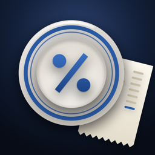

A calm, fast tip calculator. Tip on the subtotal, see what’s typical for where you are, and split the check by who had what.
Contact · FAQ · Privacy Policy
Questions, bug reports and ideas are welcome. We usually reply within a few days.
Why tip on the subtotal?
Tipping on the amount before tax is a common custom in the US. Enter the tax and Blue Plate works out the tip on the subtotal, and shows how much you kept.
What is a Mirror total?
Blue Plate raises the total a little so it reads the same both ways, like $48.84. Some people do this so they can recognize their charge on a card statement at a glance.
How do I use Siri?
Say “Tip with Blue Plate”, then say the amount. Siri answers with the tip and total at your default percent.
How do I add the widget?
Touch and hold the Home Screen or Lock Screen, tap Edit or Customize, and add Blue Plate. The widget shows a tip chart and opens a new check.
How do I use it on Apple Watch?
Tap the check to type the amount, then turn the Digital Crown to change the tip. Swipe up to split between people.
Are the tipping guidelines rules?
No. They reflect common US custom. What you leave is always your call.
Last updated: September 2026
Blue Plate (“the App”) is provided by an independent developer (“we”). This policy explains how the App handles information.
We do not collect any personal information. The App has no accounts, no sign-in, no ads, no analytics and no tracking, and it does not connect to the internet.
Checks, names and settings
The amounts, names and items you enter, and your settings, are stored only on your device. If you use Share to send a split, only the text you choose to send is shared, through the app you pick.
Purchase
The App is purchased through the App Store. Apple processes the payment, and we do not receive your name, email address or payment information. Please see
Apple’s Privacy Policy for details.
We do not collect, store or share any personal information from anyone, including children under 13.
Start a new check to clear the current one. Deleting the App removes all of its data from your device.
We may update this policy when the App changes. Updates will be posted on this page with a new “Last updated” date.
Questions about this policy? Email us at tajimaru1209@gmail.com.